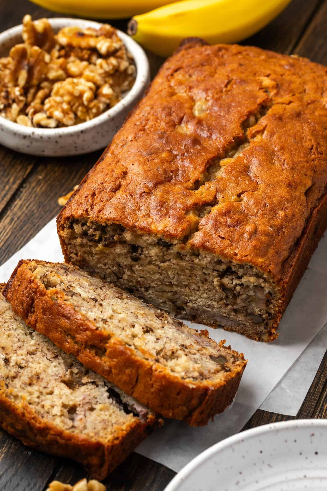

Home
Banana Bread

A soft, moist banana bread made with ripe bananas and sour cream, with optional chocolate chips and walnuts for extra sweetness and crunch. Perfect for breakfast or a sweet snack.
Ingredients
- 1 ¾ cups all-purpose flour
- 1 teaspoon baking soda
- ½ teaspoon salt
- ½ teaspoon ground cinnamon
- ½ cup unsalted butter, melted
- ¾ cup brown sugar
- 2 large eggs
- 3 ripe bananas, mashed
- 1 teaspoon vanilla extract
- Optional: ½ cup chopped walnuts or chocolate chips
Steps
- Preheat oven to 350°F (175°C). Grease a 9 × 5-inch loaf pan and line with parchment, leaving overhang for lifting.
- Mash 2 bananas, keeping some small lumps. Thinly slice the remaining banana.
- Stir melted butter and sugar together. Add eggs and vanilla; mix until smooth.
- Stir in sour cream, mashed bananas, baking soda, and salt.
- Gently mix in flour just until combined.
- Fold in sliced banana, chocolate chips, and walnuts, if using.
- Pour into the pan. Bake 50–60 minutes, until a toothpick inserted into the center comes out clean.
- Cool in the pan for 15 minutes, then lift out and transfer to a wire rack.
- Yield: About 8 servings.